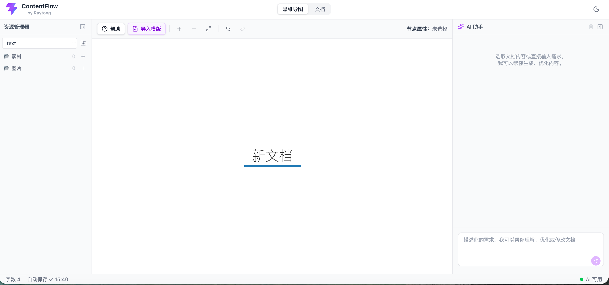
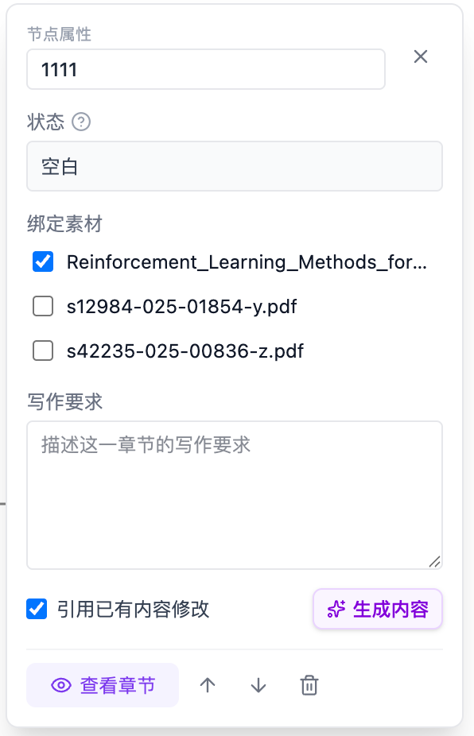

快速开始
花 30 秒了解 ContentFlow 是什么、界面长什么样、第一次使用建议怎么走。
ContentFlow 是什么
ContentFlow 是一个面向内容创作的工作流平台。你可以把它理解成"思维导图 + 文档编辑器 + AI 助手"的组合——用思维导图搭骨架、给节点绑素材和要求、让 AI 逐章节生成，再在文档里精修，最后导出成稿。
它跟 Chatbot 最大的不同：你有一个文档主界面，AI 的生成和修改直接落到文档里，不是回复框里的一段文字。
三栏工作区一览

- 左侧：资源管理器（默认 220px，可折叠）——按分类展示素材、图片。
- 中间：主工作区——在思维导图和文档编辑器之间切换，通过顶部 Tab 或 Alt/Option + 1 切换。
- 右侧：AI 助手——对话、生成记录、选区修改结果都在这里。
- 底部：状态栏——字数、最近保存时间、AI 健康状态指示灯。
第一次使用建议路径
- 新建一个项目，起个能一眼看懂的名字（比如"季度报告"）。
- 上传 1–3 份关键素材（TXT/MD/DOCX/PDF 均可）。
- 切到思维导图，手动列出文档的一级章节；或者点"导入模版"丢一份参考稿进去，让 AI 自动搭出骨架。
- 点开根节点，绑定通用素材，写一句总体写作要求。
- 点击"生成内容"，让 AI 一次性写完初稿全文。
- 切到文档视图，选取需要修改的段落，让 AI 微调。
创建项目与管理素材
一个任务 = 一个项目 = 一个独立的资源与文档空间。数据全部保存在浏览器本地，不会上传到服务器。
新建项目
- 点击顶部项目下拉菜单中的"新建项目"。
- 输入项目名后确认，会自动切换到该项目。
- 再次点击项目下拉可切换到其他项目；首次进入时会自动打开列表中的第一个。
两种文件分类
资源管理器把上传的文件分为两类，用途不同：
| 分类 | 支持格式 | 用途 |
|---|---|---|
| 素材 | DOC · DOCX · PDF · TXT · MD | 绑定到节点，作为 AI 生成的上下文 |
| 图片 | PNG · JPG · JPEG · GIF · WEBP | 保存图片文件（OCR 能力开发中） |
上传与管理
- 点击对应分类下的上传按钮，支持单次选择多个文件。
- 每个分类会显示当前文件数量。
- 支持删除文件。
- 拖拽资源管理器中的文件到思维导图节点上，即可完成绑定。

搭建思维导图骨架
思维导图不仅是可视化工具，更是文档的骨架和 AI 生成的调度中心。
节点的基本操作
| 操作 | 效果 |
|---|---|
| 单击节点 | 选中节点并打开节点属性小框 |
| 双击节点 / F2 | 行内编辑节点标题 |
| Enter | 添加同级节点（根节点特殊：改为添加子节点，避免多个 H1） |
| Tab | 添加子节点 |
| Delete / Backspace | 删除当前节点（会二次确认） |
| Alt+↑ / ↓ | 上下调整同级节点顺序 |
撤销、缩放与视角
- 工具栏支持放大、缩小、适应视图、撤销、重做。
- 快捷键 ⌘/Ctrl+Z、⌘/Ctrl+Shift+Z、⌘/Ctrl+Y 均可用。
- 撤销栈最多保留 50 步，刷新后清空。
- 普通新增/重命名/移动不会强制重新适配视图，避免缩放跳动。只有首次进入、切换项目或主动点击"适应视图"时才自动适配。
导图与文档如何同步
导图是文档标题结构的主要来源。你在导图里的动作会同步反映到文档标题：
- 新增节点：文档中生成对应空章节，不影响其他章节正文。
- 重命名节点：标题更新，正文保留。
- 移动节点：正文跟随节点一起移动。
- 删除节点：对应章节从文档中移除。

导入模版一键搭骨架
手上有份心仪的参考稿？直接把它交给 ContentFlow——AI 会识别章节结构、生成思维导图，可选择连原文正文一起带进对应章节。
什么时候用
- 你有一份结构可以借鉴的旧文档、简历、周报、PRD、汇报稿，想沿用它的框架。
- 你不想从零手写导图，想让 AI 帮你把骨架先立起来，再在此基础上调整。
- 你甚至想把参考稿的原文正文作为写作起点，让 AI 后续在此基础上润色扩写。
入口
切到思维导图视图，工具栏「帮助」按钮右边就是「导入模版」按钮。当前项目未选择时按钮为禁用。
解析流程
- 上传文件：点击或拖入 1 个文件，支持 MD / DOC / DOCX / PDF。
- 自动解析：AI 解析出章节树，自动计算章节层级。
- 预览编辑：支持任意增删改层级、重命名、勾选是否连正文一起导入。
- 开始导入：确认后落到思维导图和文档；勾选了正文的章节会覆盖到对应位置。
预览面板可以做什么
| 操作 | 效果 |
|---|---|
| 勾选正文导入 | 把 AI 识别的原文正文一并写入该章节；若章节无正文则复选框禁用 |
| H1←→H6 层级 | 行悬停时右侧箭头按钮，逐级升/降；点击标题就地重命名 |
| 删除节点 | 移除误识别的章节 |
| 全选正文 / 清空 | 批量切换所有有正文的章节的勾选状态 |
| 重置 | 撤销所有修改，恢复到 AI 初次解析结果 |

与当前文档的关系
- 导入会覆盖当前思维导图结构——现有章节的正文按标题匹配保留，无匹配的章节会消失。
- 勾选了"连同正文导入"的章节，其内容会覆盖到对应位置（如已有内容将被替换）。
- 导入后可用 ⌘/Ctrl + Z 撤销（导入本身占一次撤销记录）。
节点属性小框
这是 ContentFlow 最重要的交互——把「写什么、用什么、怎么写」讲给 AI 听，就发生在这张卡片上。
小框里都有什么
- 节点标题（顶部显示，方便确认位置）
- 内容状态及状态说明（三种状态见下方）
- 绑定素材列表（可勾选，可从资源管理器拖入）
- 写作要求多行输入框
- "引用已有内容修改"勾选项（默认开启）
- 生成内容按钮（写作要求区域右下侧）
- 底部：查看章节 · 上移 · 下移 · 删除

绑定素材：勾选、拖入、自动继承
- 可以直接在小框里勾选已上传的素材。
- 也可以从资源管理器拖入节点完成绑定。
- 父节点绑定的素材会自动继承到全部后代节点——子节点里显示为已勾选并置灰，不能取消。
- 悬浮继承项会提示"继承自父节点"。
- 素材列表带滚动条，初始可视高度约 7 条。
写作要求：单独配置章节要求，个性化设计
每个节点单独保存自己的写作要求。批量生成时不要求你为所有节点预先配置。若某节点没写要求，AI 会用以下默认规则：
- 有子节点的章节：生成章节引导和结构概述，不提前展开子章节细节。
- 叶子节点：围绕本节标题完整展开，生成具体、连贯的正文。
"引用已有内容修改"
默认勾选。勾选后 AI 生成时会把当前章节已有内容、可用的祖先章节和前序章节内容作为上下文，帮助保持行文一致。
如果你希望某章节完全从零重写、不受前面已写内容影响，可以取消此项。
三种内容状态
| 状态 | 含义 | 父节点批量生成时 |
|---|---|---|
| 空白 | 当前章节及其子章节没有正文 | 可以生成 |
| 已有文本 | 当前节点或子树已有正文，尚未保护 | 可以覆盖 |
| 已有文本（保护） | 经过人工编辑或叶子节点二次生成 | 跳过，不覆盖 |
状态旁有圆圈问号图标，悬浮显示简短说明。保护状态提供「解除保护」操作。
AI 生成与修改
ContentFlow 的核心能力：让 AI 精准参与到文档的每一次生成和修改，结果直接落到文档，不需要复制搬运。
三种生成范围
在不同层级的节点上点击"生成内容"，AI 的生成范围不同：
| 发起位置 | 生成范围 |
|---|---|
| 根节点 | 生成根节点下所有章节，不为文档标题本身生成正文——因此根节点绑定的素材实际就是"全局素材" |
| 父节点 | 生成父节点自身及其全部后代章节 |
| 叶子节点 | 只生成当前章节 |

生成规则
- AI 只生成章节正文，不允许重复标题或返回新的 Markdown 标题结构。
- 生成结果精确覆盖对应章节正文。
- 写入前会二次比较：如果该章节在等待期间被你或其他操作修改过，会跳过覆盖并报告失败，保护你刚完成的编辑。
保护与覆盖规则
- 批量生成会跳过后代中处于"保护"状态的章节。
- 用户主动点击某节点的生成，允许直接重写，即使它此前处于保护状态。
- 对已有正文的叶子节点再次生成，视为微调，写入后自动进入保护状态。
- 首次生成空白叶子节点只进入"已有文本"，不会立即保护。
- 手动修改某章节正文后，该章节进入保护状态。
- 清空某章节正文后，该章节回到"空白"并解除保护。
✨ 亮点功能：选取原文 · AI 精准修改
这是 ContentFlow 参考 Claude Code 交互思路设计的能力——AI 修改的结果直接体现在文档主界面，不需要复制搬运。
怎么用
- 在文档编辑器中选中一段连续原文。
- 右侧 AI 输入框上方会出现"选取原文"引用卡片（单行摘要，悬浮可查看完整内容）。
- 在输入框写下你的修改要求（比如"语气改得更学术"）并发送。
- AI 返回修改后的完整文本 + 结构化修改项，自动覆盖当前选区。

每条修改都会给出结构化说明
- 表达问题 · 结构问题 · 内容缺失
- 术语或事实问题 · 格式问题 · 其他问题
修改结果卡片：可返回、可重新应用
- 修改完成后，AI 面板出现修改结果卡片，可展开查看各问题类型的简短总结。
- 点击「返回」按钮恢复该次修改前的选区内容，成功后显示"已返回修改前内容"。
- 返回按钮支持重复使用，可反复恢复到修改前版本。
- 点击「重新应用」再次写入修改后的版本。
普通 AI 对话
如果你没有选取任何原文，输入框里的内容会被当作普通对话处理：
- AI 回答只显示在右侧对话框中，不自动改写文档。
- 请求携带当前导图结构和文档内容作为上下文。
- 可以问结构性问题："这篇文档整体结构合理吗？" "第二章和第三章有没有内容重复？"
文档编辑与常用技巧
主工作区里除了 AI 相关能力，还有一些编辑细节可以让你写得更顺。
标题悬浮操作条
操作条只在鼠标悬浮标题左侧层级编号时出现，避免选择或复制标题时的误触。当前提供：
- 一键复制（已实现）：复制当前标题及其章节正文
- 优化表达 · 精简内容 · 丰富内容 · 继续写（界面已就位，执行逻辑开发中）
快速跳转到章节
- 节点属性小框中的「查看章节」会切换到文档视图，自动滚动到对应标题并短暂高亮。
- 顶部 Tab 或 Alt/Option+1 在思维导图/文档之间切换。
AI 面板宽度
- 默认宽度 220px，可拖动左边缘加宽到最多 560px。
- 面板最大宽度会根据窗口宽度和左侧资源栏状态动态收紧，优先为中间工作区保留约 480px。
- 调整后的宽度会写入本地存储，刷新后继续使用。
- 拖拽条支持键盘：← / → 微调，Shift+方向键加大步长，Home 回到最小，End 到当前最大。
自动保存与状态栏
- 正文更新采用自动保存；切换视图不会丢失待保存内容。
- 状态栏显示：当前文档字数 · 最近自动保存时间 · AI 后端健康状态（每 30 秒检查一次）。
- AI 状态显示"AI 可用"、"AI 不可用"或"检测中"三种。
主题切换
支持浅色和深色两种主题，选择保存在本地。
快捷键汇总
| 快捷键 | 功能 |
|---|---|
| Alt+1 | 思维导图 ↔ 文档 视图切换 |
| Enter | 思维导图中添加同级节点（根节点：添加子节点） |
| Tab | 思维导图中添加子节点 |
| F2 | 编辑当前节点标题 |
| Delete / Backspace | 删除当前节点（二次确认） |
| Alt+↑ / ↓ | 调整同级节点顺序 |
| ⌘/Ctrl+Z | 撤销 |
| ⌘/Ctrl+Shift+Z / ⌘/Ctrl+Y | 重做 |
| Esc | 关闭思维导图帮助框 |
用户反馈与提升
用户使用后的反馈，都收集在这里。
可以让 AI 从已有文档一键搭骨架吗？
可以。切到思维导图视图，工具栏「导入模版」按钮 → 上传一份参考稿（MD / DOC / DOCX / PDF）：
- MD 由前端直接解析章节；DOCX / PDF 由 AI 分析结构。
- 预览面板里可以增删改层级、重命名，也可以勾选是否连正文一起导入。
- 确认后自动生成思维导图 + 文档骨架，可直接在此基础上编辑。
详见 章节 04。
导出 Word / PDF 什么时候上线？
导出 Word (.docx) 已在计划中；我们希望你在编辑器里看到什么，导出就是什么。PDF 导出会在 Word 导出之后跟进。
AI 生成后不满意，能撤回吗？
可以。有两种情况：
- 选取原文修改：AI 面板的修改结果卡片上有"返回"按钮，可以恢复到修改前的选区内容；点"重新应用"又能写回修改后的版本，来回切换。
- 章节生成：如果生成的章节内容不满意，你可以直接手动编辑覆盖（此后该章节进入保护状态）；也可以点开节点"生成内容"，让 AI 用当前的写作要求重新生成一次。
生成过程中失败了怎么办？
单个章节请求失败会自动等待一段时间后再次发送请求。如果重试后依然失败，工作流会显示失败，其他成功的章节不受影响。你可以在失败节点上再次点击"生成内容"手动重试。
如果状态栏显示"AI 不可用"，通常是后端未启动或网络问题。
为什么我从父节点生成，某几个子章节没被更新？
大概率因为这些子章节处于"已有文本（保护）"状态——通常是你手动改过、或叶子节点二次生成过。批量生成会跳过保护章节。
解决办法：点开对应节点，点"解除保护"，然后再从父节点批量生成。
为什么我只是浏览了文档，章节就变成保护状态了？
这是旧版本的问题，已经修复。当前只有真实的用户内容事务会被识别为人工编辑并触发保护，浏览、切换视图、系统同步标题都不会。
父节点绑定的素材，子节点也自动用吗？
是的。父节点绑定的素材会自动继承到全部后代节点，在子节点中显示为已勾选并置灰，无法在子节点取消。
生成时会合并该节点所有祖先和自身绑定的素材，自动去重后传给 AI。
思维导图节点太多，怎么快速定位？
工具栏支持放大 / 缩小 / 适应视图；工具栏右侧会显示当前选中的节点名称。此外，从文档回到导图时，之前选中的节点依然被选中。